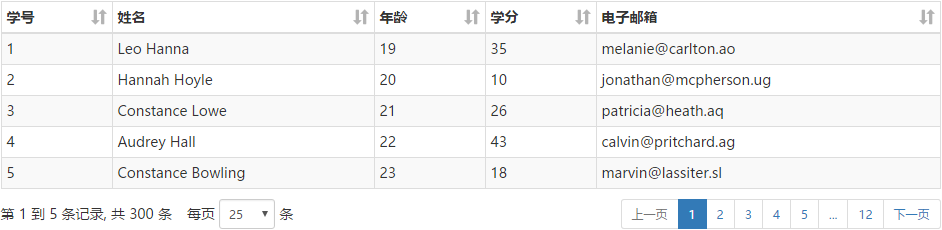
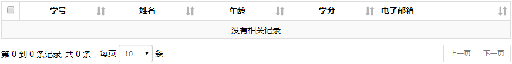

jquery-xjzTable v0.1.4
一、简介
一个功能强大且简单易用的表格插件.
特点：
- 支持分页、分页信息、分页大小
- 支持ajax数据源、本地数据源
- 支持排序
- 单元格鼠标悬停浮动tooltip
- 自定义单元格内容渲染
- 精准控制dom生成
- 回调函数
- 强大的表格刷新方法
- bootstrap样式
- 支持自定义css样式类
- 配置简单
- 兼容IE8
- 多语言支持
- ...
下载： GitHub
作者：
徐俊洲
QQ: 765550360(清晨的阳光)
2016-10-01
如果您觉得好用, 并且想获取源码, 就请支付宝打赏我吧. 之后765550360@qq.com通知我, 我会第一时间发送源码!
二、基本使用
1. 加载文件
2. 增加table标签
3. 初始化
$(function () {
var config = {
ajax: {
url: 'js/test.json'
},
columns: [
{ title: '学号', field: 'id' },
{ title: '姓名', field: 'name' },
{ title: '年龄', field: 'age' },
{ title: '学分', field: 'grade' },
{ title: '电子邮箱', field: 'email' }
]
};
$("#test1").xjzTable(config);
});
请求url：http://localhost:8088/js/test.json?paging=1&start=0&limit=25&sort=[ ]&_=1475658546102
服务器返回json：
{
"total": 300,
"rows": [
{
"id": 1,
"name": "Leo Hanna",
"age": 19,
"grade": 35,
"email": "melanie@carlton.ao"
},
{
"id": 2,
"name": "Hannah Hoyle",
"age": 20,
"grade": 10,
"email": "jonathan@mcpherson.ug"
},
{
"id": 3,
"name": "Constance Lowe",
"age": 21,
"grade": 26,
"email": "patricia@heath.aq"
},
{
"id": 4,
"name": "Audrey Hall",
"age": 22,
"grade": 43,
"email": "calvin@pritchard.ag"
},
{
"id": 5,
"name": "Constance Bowling",
"age": 23,
"grade": 18,
"email": "marvin@lassiter.sl"
}
]
}
截图：
数据为空的情况:
三、配置
1. 列配置
| 配置项 | 数据类型 | 默认值 | 说明 | 示例 | |
| columns:[{}] | title | String | 表头显示的列名 |
title: '学号' //普通文本
title: '<input type="checkbox">' //html字符串
|
|
| field | String | 指定要显示在该列的数据字段名 | field: 'id' | ||
| defaultContent |
String $object |
数据为空值时要显示的默认值 |
defaultContent: '--' //普通字符串
defaultContent: '<span>--</span>' //html字符串
defaultContent: $('<span>--</span>') //jquery对象， 克隆该对象(包含事件)
defaultContent: $("#add") //查找出来的jquery对象， 克隆该对象(包含事件)
|
||
| sort |
String Boolean |
true |
排序控制 如果要对该列进行排序, 则必须配置field属性. |
sort: true //在该列等待排序(默认)
sort: 'desc' //倒序
sort: 'asc' //升序
sort: false //该列禁用排序
|
|
| className | 要添加到该列的css类 | className: 'class1 class2' //空格分隔多个类 | |||
| width |
String Number |
列宽， 作用于th |
width: 30 //相当于30px
width: '30' //相当于30px
width: '30px'
width: '30%' //百分比
|
||
| textAlign | String | 'left' | 该列内容的水平对齐方式 |
textAlign: 'center' textAlign: 'left' textAlign: 'right' |
|
| verticalAlign | String | 'middle' | 该列内容垂直对齐方式 |
verticalAlign: 'middle' verticalAlign: 'top' verticalAlign: 'bottom' |
|
| tooltip |
String boolean number $object |
false | 在该列使用鼠标悬停提示 |
//提示内容为该单元格的原始值
tooltip: true
//使用普通字符串作为提示内容
tooltip: '提示内容'
//使用html字符串作为提示内容
tooltip: '<span>提示内容</span>'
//使用数值作为提示内容
tooltip: 1234567890
//使用jquery对象作为提示内容(克隆该对象, 包含事件)
tooltip: $('<span>提示内容</span>')
//使用查找出来的jquery对象作为提示内容(克隆对象, 包含事件)
tooltip: $("#x1")
//禁用(默认)
tooltip: false
|
|
| render | Function | 列内容渲染函数 |
function（rowData, rowIndex, colIndex, colObj, options）{
/*this 指向该$td*/
//rowData: 该行数据对象
//rowIndex: 该行在该页的索引
//colIndex: 列索引
//colObj: 该列的配置对象
//options: 表格配置对象
/*设置tooltip, 这里的设置会覆盖tooltip配置*/
this.data("title", "提示:" + rowData.id); //普通字符串
this.data("title", '<span style="color:red;">提示:'+ rowData.id +'</span>'); //html字符串
this.data("title", $('<span style="color:red;">提示:'+ rowData.id +'</span>')); //jquery对象
/*这里返回的内容会覆盖field配置*/
return rowData.id; //返回行数据对象的字段
return '--'; //返回普通内容
return '<span>'+rowData.id+'</span>'; //返回html字符串
return $('<span>'+rowData.id+'</span>'); //返回jquery对象， 克隆该对象(包含事件)
}
|
||
| defColumns:{} | object |
所有列的默认配置. 在列的具体配置中会覆盖这里的配置项 |
|
列配置示例:
$(function () {
var config = {
data: tableData, //本地数据源
columns: [
{
title: '',
sort: false,
width: '20',
render: function () {
return $('');
}
},
{
title: '学号',
field: 'id',
className: 'success'
},
{ title: '姓名', field: 'name' },
{
title: '年龄',
field: 'age',
sort: 'asc',
},
{
title: '学分',
field: 'grade',
defaultContent: '--'
},
{
title: '电子邮箱',
field: 'email',
defaultContent: $("#add")
}
],
defaultSize: 10 //页面大小
};
$("#test2").xjzTable(config);
});
(表格中引用了该按钮)
tooltip配置示例:
$("#test6").xjzTable({
data: tableData2,
defColumns: {
tooltip: true //启用所有列的tooltip
},
columns: [{
title: '',
sort: false,
width: '20',
render: function () {
return $('');
}
}, {
title: '编号',
field: 'id',
width: 30,
tooltip:false //在该列关闭tooltip
}, {
title: '文件名',
field: 'fileName',
width: 100,
render: function (rowData) {
this.data("title", ' '); //设置该列tooltip
return ''+rowData.fileName+''; //设置该列的内容生成
}
}, {
title: '文件大小',
field: 'size',
width: 100
}, {
title: '创建时间',
field: 'time'
}, {
title: '说明',
field: 'content'
}]
});
'); //设置该列tooltip
return ''+rowData.fileName+''; //设置该列的内容生成
}
}, {
title: '文件大小',
field: 'size',
width: 100
}, {
title: '创建时间',
field: 'time'
}, {
title: '说明',
field: 'content'
}]
});
2. ajax配置
该ajax配置其实就是jquery的$.ajax()配置, 这里只是初始化了几个默认值, 并且重写了success函数
| 配置项 | 数据类型 | 默认值 | 说明 | 示例 |
|
| ajax:{} | type | String | 'get' | 请求方式 | type:'post' |
| dataType | String | 'json' | 数据返回格式(建议不要修改) | ||
| cache | Boolean | false | 请求是否被缓存(建议不要修改) | ||
| pagingText | String | 'paging' | 请求页码标识(从1开始) | ||
| startText | String | 'start' | 请求的起始记录的索引标识(从0开始) | ||
| limitText | String | 'limit' | 请求的条数标识 | ||
| sendCallback | function | null |
发送之前要执行的函数, 一般用于修改发送的参数 sendCallback(options) //options为表格配置对象 |
sendCallback(options){
options.ajax.data.a=1;
//在请求的url参数中增加a=1
//函数不必返回值
}
|
|
| successCallback | function | null |
请求成功的回调函数, 一般用于格式化返回的数据, 请用该方法代替$.ajax.success方法 successCallback(data, options) //data为服务器返回的数据(由json转化的js对象) //options为表格配置对象 |
successCallback(data, options) {
//如果服务器返回标识为0, 则设置行数据为空数组, 并弹出错误消息
if(data.result_status == 0){
data.rows=[];
alert(data.result_message);
}else{
$.each(data.rows,function(i,d){
d.a=1; //在每一行的数据中增加a=1
});
}
//函数不必返回值
}
|
|
| dataSrc | String | function | 'rows' |
从服务器返回的数据中提取行数据的方式, 行数据要求为对象数组:[{},{},{}] 如果dataSrc配置为字符串, 则字符串间的"."表示为对象层级关系 |
//使用返回数据中第一层的rows, 返回示例: { rows:[] }
dataSrc: 'rows'
//返回示例: { data: { rows:[] } }
dataSrc:'data.rows'
//作为一个返回数据的函数, 应用于更为复杂的情况
dataSrc:function(data, options){
//data 为服务器返回的数据(由json转化的js对象)
//options 为表格配置对象
return data.rows;
}
|
|
| totalSrc | String | function | 'total' |
从服务器返回的数据中提取总记录数的方式, 同上! |
totalSrc: 'total' //使用返回数据中第一层的'total', 返回示例: {'total':300} 同上! |
|
| masklayer | Boolean | true | 在ajax加载时是否显示表格遮罩层 |
3. 本地数据源
如果同时配置了ajax数据源和本地数据源, 则本地数据源覆盖ajax数据源
| 配置项 | 数据类型 | 说明 | 示例 |
| data | Array | 对象数组 | [{a:1, b:2},{a:2, b:3}] |
| dataFilter | function |
在分页排序之前执行函数, 用于过滤, 格式化数据 dataFilter(data, options) //this指向$table //data: 对象数组(本地数据源) //options: 表格配置对象 |
dataFilter: function (data, options) {
//过滤掉id等于1的行
var rows = [];
$.each(data, function (i, d) {
if (d.id != 1) {
rows.push(d);
}
});
return rows;
}
|
4. 分页
如果设置 paging:null, 则不显示分页, 且ajax请求时不发送分页参数
| 配置项 | 数据类型 | 默认值 | 说明 | |
| paging:{} | startPage | Number | 1 | 起始页面 |
| visiblePages | Number | 7 | 可视的分页按钮数量 | |
| pagingType | String | 'simple_numbers' |
/*分页类型:*/
'full_numbers': //首页 上一页 [1...] 下一页 尾页
'simple_numbers': //上一页[1...]下一页
'full': //首页 上一页 下一页 尾页
'simple': //上一页 下一页
'numbers': //只显示页面按钮[1...]
|
|
| ellipsis | Boolean | true |
是否显示省略页面[...] 如果visiblePages小于7, 则不显示 |
|
| first | String |
翻页按钮上显示的文本 默认值为lang(语言配置)里的相应值, 如果这里有设置, 则覆盖lang里的相应值 |
[首页] 按钮显示的文本 | |
| prev | String | [上一页] 按钮显示的文本 | ||
| next | String | [下一页] 按钮显示的文本 | ||
| last | String | [尾页] 按钮显示的文本 | ||
| more | String | [...] 按钮显示的文本 | ||
| firstClass | String | 'first' | [首页] 按钮css类 空格分隔多个类 | |
| prevClass | String | 'prev' | [上一页] 按钮css类 | |
| nextClass | String | 'next' | [下一页] 按钮css类 | |
| lastClass | String | 'last' | [尾页] 按钮css类 | |
| moreClass | String | 'more' | ["更多页"] 按钮css类 | |
| pageClass | String | 'page' | "页面" 按钮css类 | |
| activeClass | String | 'active' | "当前页"(激活页) 按钮css类 | |
| disabledClass | String | 'disabled' | 禁用 按钮css类 | |
| pagingClass | String | 'pagination pagination-sm' |
分页<ul>列表css类 jquery-xjzTable-all.min.css文件提供了两种风格的分页 'pagination pagination-sm': bootstrap风格 'paging-transition': css3过渡效果IE10+ 如要修改请参考源码 |
|
| wrapClass | String | 'xjzTable-paging' | 分页<ul>包裹层css类, 如要修改请参考源码 |
5. 分页信息
如果设置 pagingInfo:null, 则不显示分页信息
| 配置项 | 数据类型 | 默认值 | 说明 | |
| pagingInfo:{} | pagingInfoClass | String | 'paging-info-sm' | 分页信息<span> css类, 如要修改请参考源码 |
| wrapClass | String | 'xjzTable-paging-info' | 包裹层css类, 如要修改请参考源码 |
6. 分页大小(每页显示多少条记录)
如果设置 pageLength:null, 则不显示分页大小选择控件
| 配置项 | 数据类型 | 默认值 | 说明 | |
| pageLength:{} | pageLengthClass | String | 'form-control input-sm' | 应用到<select> 的css类 |
| wrapClass | String | 'xjzTable-paging-length' | 包裹层css类, 如要修改请参考源码 |
|
| data | Array | [10, 25, 50, 100] | 分页大小选项 |
|
| defaultSize | Number | 25 | 默认分页大小, 如果pageLength.data里没有该值, 则会自动添加 |
|
7. 排序
ajax请求时排序参数说明:
无排序: http://localhost:8088/doc/assets/test.json?paging=1&start=0&limit=10&sort=[]&_=1476017061055
降序: http://localhost:8088/doc/assets/test.json?paging=1&start=0&limit=10&sort=[{"field":"name","type":"desc"}]&_=1476017061055 //依照name字段降序
升序: http://localhost:8088/doc/assets/test.json?paging=1&start=0&limit=10&sort=[{"field":"name","type":"asc"}]&_=1476017061055 //依照name字段升序
(排序参数名为sort, 值为一个json格式的对象数组. 对象中field属性表示要排序的字段, type属性表示排序是降序还是升序)
如果设置 sort:null, 则取消所有列的排序功能. 如果要禁用或设置某一列的默认排序请参考columns配置中sort参数
| 配置项 | 数据类型 | 默认值 | 说明 | |
| sort:{} | noneClass | String | 'sort sort-none' | 等待排序 表头图标的css类 空格分隔多个类, 若要修改请参考源码 |
| ascClass | String | 'sort sort-asc' | 升序 表头图标的css的类 空格分隔多个类, 若要修改请参考源码 | |
| descClass | String | 'sort sort-desc' | 降序 表头图标的css类 空格分隔多个类, 若要修改请参考源码 | |
| activeClass | String | 'sort-active' | 排序列单元格的css类 空格分隔多个类, 若要修改请参考源码 | |
| timeout | Number | 250 | 排序的延迟时间(毫秒), 在该时间内多次点击只有一次有效, 避免服务器压力过大 |
8. 回调函数
| 说明 | |
| theadCallback |
<thead>创建完成的回调函数, 此时<th>已经插入 如果表格本身有<thead>, 则不会执行该函数
theadCallback(options)
//this指向$thead
//options为表格配置对象
|
| rowCallback |
行创建完成的回调函数, td已经插入
rowCallback(rowData, rowIndex, options)
//this指向$td
//rowData: 行数据对象
//rowIndex: 行在该页的索引
//options: 表格配置对象
|
| drawCallback |
表格绘制完成的回调函数
drawCallback(rows, options)
//this指向$table
//rows: 所有行数据
//options: 表格配置对象
|
9. 控件DOM 控制

| 配置项 | 数据类型 | 默认值 | 说明 |
| dom | String | "T<'pull-left'I><'pull-left'L><'pull-right'P>" |
用于生成各个控件的DOM包裹层, 和控制位置. '<>' 代表一个<div></div>元素 "<'class1'>" 代表一个<div class="class1"></div> "<'class1'T>" 代表一个<div class="class1"><table></table</div> 默认值中的类说明: pull-left: 左浮动 pull-right: 右浮动 更多类说明请参见页面底部的css类说明 使用bootstrap布局： dom: "<'row'<'col-sm-12'T>><'row'<'col-sm-3'I><'col-sm-3'L><'col-sm-6'P>>" |
dom: "<'pull-left'L>T<'pull-left'I><'pull-right'P>"
dom: "<'pull-right'P>T<'pull-left'I><'pull-right'L>"
dom: "<'table-responsive clearfloat'T><'pull-left'I><'pull-left'L><'pull-right'P>" 使用css类.table-responsive使表格不换行， 水平滚动
10. 其他配置项
| 配置项 | 数据类型 | 默认值 | 说明 | |
| lang | String | 'zh_CN' |
语言选项 'zh_CN': 简体中文 'zh_TW': 繁体中文 'en_US': 英文 |
|
| evenClass | String | 'even' | 奇数行css类 多个类请用空格分隔 | |
| oddClass | String | 'odd' | 偶数行css类 多个类请用空格分隔 | |
| xjzTooltipWrapClass | String | 'xjzTooltip' | tooltip包裹层的css类, 若要修改请参考源码 | |
| xjzTableWrapClass | String | 'xjzTable-container clearfix' | 总包裹层css类, 若要修改请参考源码 | |
| masklayer:{} | containerMasklayerClass | String | 'xjzTable-container-masklayer' | 总包裹层的加载遮罩层css类(透明), 若要修改请参考源码 |
| tableMasklayerClass | String | 'xjzTable-table-masklayer' | 表格的加载遮罩层css类, 用于显示加载等待..., 若要修改请参考源码 | |
11. 所有配置项
{
data: null,
dataFilter: null,
ajax: {
type:'get',
dataType: 'json',
cache: false,
startText: 'start',
limitText: 'limit',
pagingText: 'paging',
sendCallback: null,
successCallback: null,
dataSrc: 'rows',
totalSrc: 'total',
masklayer: true
},
defColumns: {},
columns: [],
paging: {
startPage: 1,
visiblePages: 7,
pagingType: 'simple_numbers', //分页类型
ellipsis: true, //是否显示省略页面...
//first: '首页',
//prev: '上一页',
//next: '下一页',
//last: '尾页',
//more: '...', //省略页面文本
firstClass: 'first',
prevClass: 'prev',
nextClass: 'next',
lastClass: 'last',
moreClass: 'more', //省略页面css类
pageClass: 'page',
activeClass: 'active',
disabledClass: 'disabled',
pagingClass: 'pagination pagination-sm', //分页ul css类
wrapClass: 'xjzTable-paging' //包裹层css类
},
pagingInfo: {
pagingInfoClass: 'paging-info-sm', //分页信息span css类
wrapClass: 'xjzTable-paging-info' //包裹层css类
},
pageLength: {
pageLengthClass: 'form-control input-sm', //每页数量select css类
wrapClass: 'xjzTable-paging-length', //包裹层css类
data: [10, 25, 50, 100]
},
defaultSize: 25,
sort: {
noneClass: 'sort sort-none',
ascClass: 'sort sort-asc',
descClass: 'sort sort-desc',
activeClass: 'sort-active',
timeout: 250
},
theadCallback: null,
rowCallback: null,
drawCallback: null,
lang: 'zh_CN',
dom: "T<'pull-left'I><'pull-left'L><'pull-right'P>",
evenClass: 'even',
oddClass: 'odd',
td_emptyClass: 'td_empty', //表格数据为空时, 单元格css类
xjzTooltipWrapClass: 'xjzTooltip',
xjzTableWrapClass: 'xjzTable-container clearfix',
masklayer: {
containerMasklayerClass: 'xjzTable-container-masklayer',
tableMasklayerClass: 'xjzTable-table-masklayer'
}
}
12. jquery-xjzTable-all.min.css 类说明
蓝色标记为bootstrap样式
| css类 | 说明 | |
| 表格 | table | 基础样式 |
| table-bordered | 边框线 | |
| table-condensed | 紧凑单元格 padding: 5px | |
| table-condensed3 | 更加紧凑的单元格 padding: 3px | |
| table-striped | 斑马条纹样式行 | |
| table-hover | 鼠标悬停状态 | |
| table-responsive |
响应式表格, 当屏幕小于768px时单元格不换行, 表格底部出现滚动条. 使用该类作为容器包裹表格: <div class=".table-responsive"> <table></table> </div>
|
|
| table-fixed-hidden | 固定表格布局, td不换行, 溢出隐藏, 以"..."代替隐藏部分 | |
| active | 给单元格或行添加 鼠标悬停 样式 | |
| success | 给单元格或行添加 "成功" 的样式(绿色) | |
| info | 给单元格或行添加 "信息" 的样式(蓝色) | |
| warning | 给单元格或行添加 "警告" 的样式(黄色) | |
| danger | 给单元格或行添加 "错误" 的样式(红色) | |
| td_empty | 表格数据为空时, 单元格css类 | |
| 分页信息 | paging-info-sm | 更小的分页信息 line-height: 30px; |
| xjzTable-paging-info | 分页信息的包裹层 | |
| 分页大小 | form-control | 表单控件基础样式 |
| input-sm | 更小的表单控件 | |
| xjzTable-paging-length | 分页大小包裹层 | |
| 分页按钮 | pagination | bootstrap样式分页按钮 |
| pagination-sm | 更小的bootstrap样式分页按钮 | |
| paging-transition | css3过渡效果的分页按钮, 不能和.pagination同时使用 | |
| first | 首页按钮 标识类 | |
| prev | 上一页按钮 标识类 | |
| next | 下一页按钮 标识类 | |
| last | 尾页按钮 标识类 | |
| more | ...按钮 标识类 | |
| page | 页面数字按钮 标识类 | |
| active | 当前页面 标识类 | |
| disabled | 禁用按钮 标识类 | |
| xjzTable-paging | 分页按钮包裹层 | |
| 排序 | sort | 排序列th样式 |
| sort-none | 等待排序图标 | |
| sort-asc | 升序图标 | |
| sort-desc | 降序图标 | |
| sort-active | 排序列单元格样式 | |
| 浮动类 | pull-left | 左浮动 |
| pull-right | 右浮动 | |
| clearfix | 清除浮动,应用于容器元素上在底部清除该内部元素的浮动效果 | |
| clearfloat | 清除浮动,在该元素本身清除浮动 | |
| 遮罩层 | xjzTable-container-masklayer | 所有控件的遮罩层 |
| xjzTable-table-masklayer | 表格加载遮罩层 | |
| 单元格鼠标悬停提示 | xjzTooltip | 提示内容的容器 |
| 总包裹层 | xjzTable-container | 所有控件的包裹层 |
四、API方法
调用方式: $("table").data("xjzTable").methodName(); //$("table").data("xjzTable")用于获取表格API对象
| 方法名 | 返回值类型 | 说明 | 示例 |
| reload | undefined |
reload(paging, sort, masklayer) 表格刷新方法
/*参数说明
-----------------------------------------------------------------
paging 分页:
Boolean | true:重新分页(加载第一页); false:保存当前分页状态(默认)
Number | 1:加载第一页; 2:加载第二页
sort 排序:
Boolean | true:清除排序; false:保留当前排序状态(默认),
Object | 对新字段进行排序 { field:'name', type:'desc' }
masklayer 遮罩层:
Boolean | true:显示加载遮罩层（默认）； false：不现实加载遮罩层
*/
|
var table = $("table").data("xjzTable");
table.reload();
//刷新当前页, 保持排序状态
table.reload(5);
//保持排序状态, 加载第5页
table.reload(true, true);
//重新分页,并清除排序状态
table.reload(true, {field: 'age', type:'asc'});
//重新分页,并根据age字段进行升序
table.reload(false,false,false);
//保持排序状态, 刷新当前页, 不显示加载遮罩层
|
| getTotalPages | Number | 获取总页数 | $("table").data("xjzTable").getTotalPages(); |
| getTotal | Number | 获取总记录数 | $("table").data("xjzTable").getTotal(); |
| getCurrentPage | Number | 获取当前页码 | $("table").data("xjzTable").getCurrentPage(); |
| getCurrentCount | Number | 获取当前页记录数 | $("table").data("xjzTable").getCurrentCount(); |